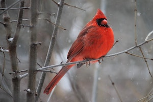
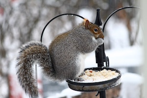
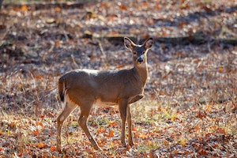
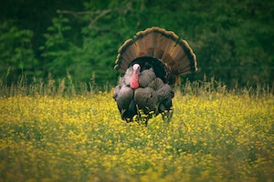
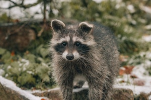
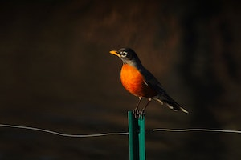

Indiana is home to a diverse range of wildlife species
Some of the most common mammals found in Indiana include white-tailed deer, raccoons, possums, coyotes, and squirrels.
The state is also home to a variety of bird species and Indiana's waterways are teeming with fish species, including bluegill, bass, and catfish.
Whether you are a nature enthusiast or just interested in learning more about the wildlife in Indiana,
we hope that you find this page informative and enjoyable. Thank you for visiting!

The state bird of Indiana.The cardinal is a medium-sized songbird found in North and South America.
Cardinals are a popular sight at bird feeders and are known for their vibrant red plumage and distinctive crests.

The gray squirrel is a common and widespread mammal found throughout much of North America, including Indiana.
Gray squirrels play an important ecological role as seed dispersers and are a popular sight in urban and suburban areas,
where they are known for their playful antics and acrobatic leaps from tree to tree.

White-tailed deer are herbivorous and feed on a variety of plants, including leaves, twigs, fruits, and acorns. They are an important animal and are also valued for their cultural and ecological significance.
In Indiana, they play a key role in maintaining healthy forest ecosystems and are a popular sight for wildlife enthusiasts and hunters alike.

They are known for their distinctive plumage, which includes iridescent feathers and a characteristic fleshy growth called a "snood" on their head.
In recent years, wild turkey populations in Indiana and other parts of the United States have rebounded, thanks in part to successful conservation efforts.

They are known for their distinctive black "mask" of fur around their eyes and their bushy, ringed tails.
Raccoons are omnivorous and feed on a variety of foods, including fruits, nuts, insects, and small animals.
They are also known for their dexterous front paws, which they use to manipulate food and other objects.Despite their reputation as pests,
raccoons play an important ecological role as seed dispersers and help control populations of certain insects and small animals.

American robins are omnivorous, feeding on a variety of foods such as earthworms, insects, and fruits.
They are also known for their melodious song, which is often heard in suburban and urban areas.
They are a common sight in backyards and gardens, where they often nest in trees and shrubs.